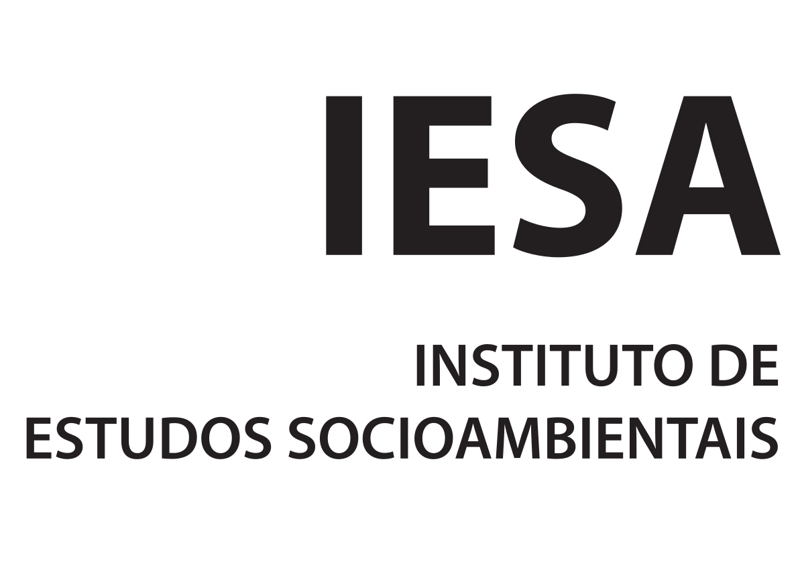
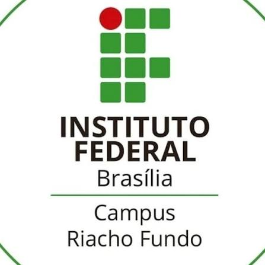
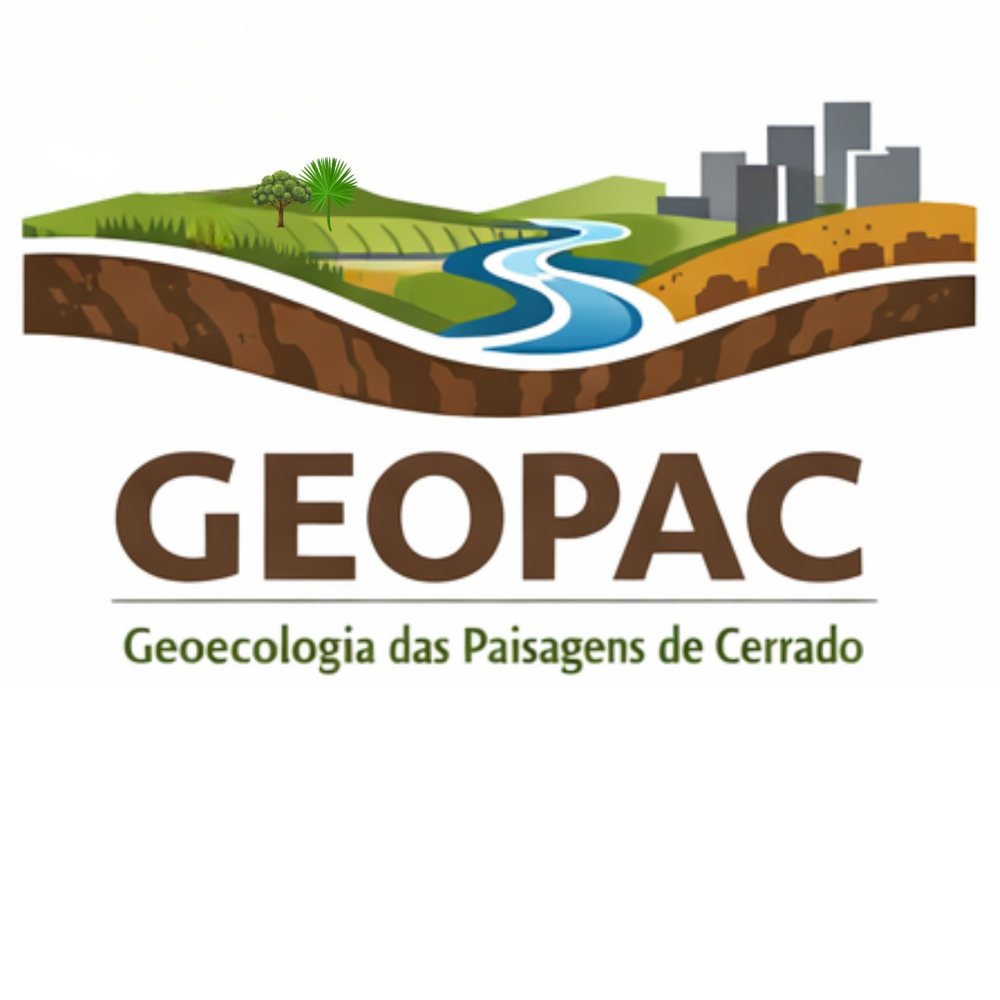
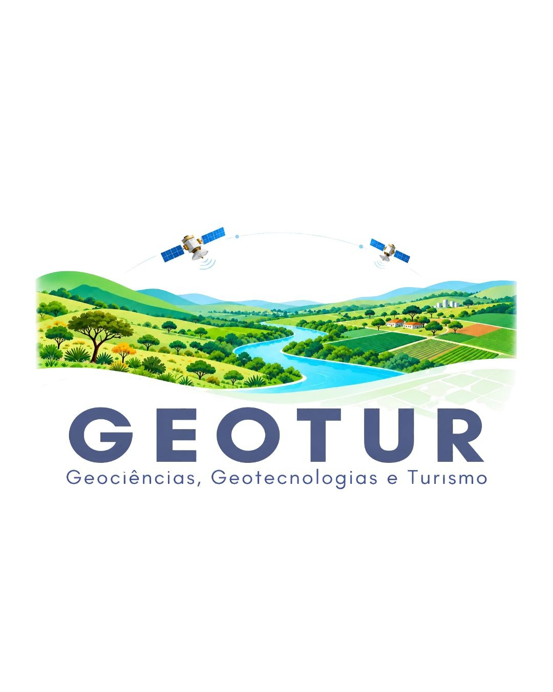
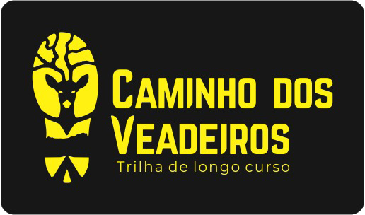

Karla Faria
Coordenação geral · UFG
PESQUISA · CONSERVAÇÃO · EDUCAÇÃO
Conheça as pessoas envolvidas na pesquisa e os temas sob sua responsabilidade.
Coordenação geral, vice-coordenações e coordenação de divulgação científica.
Coordenação geral · UFG
Vice-coordenação · UEG
Vice-coordenação · IFB – Riacho Fundo
Coordenação de divulgação · UFG/CEPAE
Coordenação de divulgação · UFG/CEPAE
Integrantes e respectivas áreas de atuação no projeto.
Dinâmica da paisagem
Conectividade da paisagem
Conflitos de uso das terras
Análise de conectividade
Serviços ecossistêmicos culturais
Avaliação da integridade ambiental
Perda de solos
Caminho dos Goyazes
Impactos socioeconômicos do geoturismo
Risco de incêndios
Mapeamento de processos erosivos
Instituições acadêmicas, grupos de pesquisa e organizações parceiras envolvidos nas atividades do projeto.






Conselho Nacional de Desenvolvimento Científico e Tecnológico (CNPq)
Projeto: Conectividade das Paisagens do Caminho dos Goyazes para a Gestão Sustentável do Cerrado Goiano.
Chamada: CNPq/MCTI nº 10/2023 · Processo: 404750/2023-0
Espaço reservado ao e-mail institucional e aos canais oficiais do projeto.